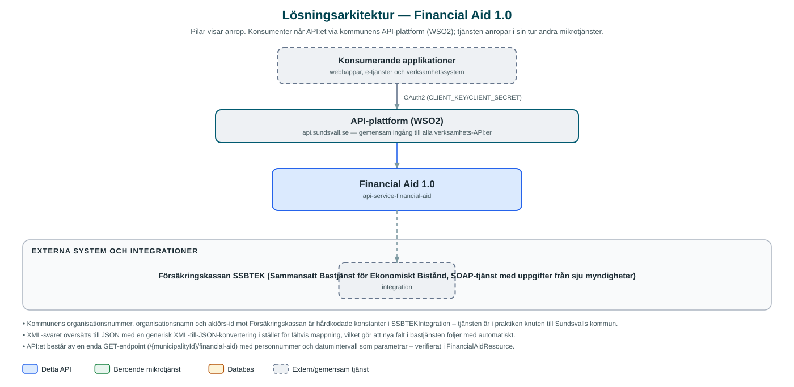

Financial Aid
Hämtar beslutsunderlag för ekonomiskt bistånd från Försäkringskassans sammansatta bastjänst SSBTEK och levererar det som JSON till socialtjänstens handläggningssystem.
Om API:et
Financial Aid ger socialtjänstens handläggare tillgång till det statliga beslutsunderlaget för ekonomiskt bistånd utan att varje system behöver bygga en egen SOAP-integration mot Försäkringskassan. Tjänsten är en proxy för SSBTEK (Sammansatt Bastjänst för Ekonomiskt Bistånd), som samlar uppgifter från sju myndigheter – bland andra CSN, Försäkringskassan, Arbetsförmedlingen, Skatteverket och Migrationsverket – i ett enda svar.
Anroparen skickar personnummer och ett datumintervall, och tjänsten bygger SSBTEK-frågan med kommunens organisationsuppgifter, anropar bastjänsten över ömsesidig TLS och översätter XML-svaret till generisk JSON grupperad per myndighet.
Tjänsten är helt tillståndslös – inga personuppgifter lagras – och används som beslutsstöd i socialtjänstens handläggning av ekonomiskt bistånd.
Det här gör API:et
- Samlat myndighetsunderlag – Ett anrop hämtar uppgifter från sju myndigheter (CSN, FK, AF, SKV, SPV/SO, TNS, MIV) via SSBTEK i ett svar.
- Fråga per person och period – Underlaget hämtas med personnummer och datumintervall som parametrar.
- XML till JSON – SSBTEK:s SOAP/XML-svar översätts generiskt till JSON grupperad per myndighet, redo att konsumeras av moderna applikationer.
- Säker myndighetsanslutning – Anropen till SSBTEK sker över ömsesidig TLS med kommunens certifikat, och frågan signeras med kommunens organisationsuppgifter.
- Tillståndslös proxy – Inga uppgifter lagras i tjänsten – varje anrop hämtas i realtid från bastjänsten.
API-dokumentation
API:ets samtliga resurser, parametrar och datamodeller finns beskrivna i en OpenAPI-specifikation som är hämtad ur källkodsförrådet. Den kan utforskas interaktivt i Swagger UI eller laddas ner som YAML.
Teknisk dokumentation
Nedan beskrivs hur tjänsten är uppbyggd, vilka andra tjänster den anropar och vad som krävs för att driftsätta den. Informationen är härledd ur källkoden och dess konfiguration på GitHub.
Arkitektur

API:et är en mikrotjänst (Java 25, Spring Boot via kommunens gemensamma tjänsteplattform dept44 (8.0.8), byggd med Maven). Konsumenter når tjänsten via kommunens gemensamma API-plattform (WSO2) på api.sundsvall.se – tjänsten anropas aldrig direkt. Övriga integrationer som förekommer i koden: Försäkringskassan SSBTEK (Sammansatt Bastjänst för Ekonomiskt Bistånd, SOAP-tjänst med uppgifter från sju myndigheter).
Teknikstack
- Språk: Java 25
- Ramverk: Spring Boot via kommunens gemensamma tjänsteplattform dept44 (8.0.8), byggd med Maven
- Övrigt: Spring Web Services (WebServiceTemplate) med JAXB-genererade klasser från SSBTEK:s kontrakt (v10)
Beroenden till andra mikrotjänster
Inga anrop till andra mikrotjänster hittades i källkodens konfiguration.
Konfiguration och driftsättning
- URL till SSBTEK-tjänsten samt keystore (base64) och lösenord för klientcertifikatet
- Konfigurerbara connect- och read-timeouts mot SSBTEK
- Ingen databas och inga OAuth2-klienter mot andra kommun-API:er – tjänsten har bara den externa SSBTEK-integrationen
- Anrop görs per kommun – municipalityId ingår i API-vägen
Noterbart ur källkoden
- Kommunens organisationsnummer, organisationsnamn och aktörs-id mot Försäkringskassan är hårdkodade konstanter i SSBTEKIntegration – tjänsten är i praktiken knuten till Sundsvalls kommun.
- XML-svaret översätts till JSON med en generisk XML-till-JSON-konvertering i stället för fältvis mappning, vilket gör att nya fält i bastjänsten följer med automatiskt.
- API:et består av en enda GET-endpoint (/{municipalityId}/financial-aid) med personnummer och datumintervall som parametrar – verifierat i FinancialAidResource.
- Tjänsten lagrar ingenting; den saknar databas och beroenden till andra kommun-API:er.
Källkod
Källkoden är öppen och finns hos Sundsvalls kommun på GitHub. I källkodsförrådet finns även instruktioner för att klona, konfigurera och starta tjänsten i egen miljö.